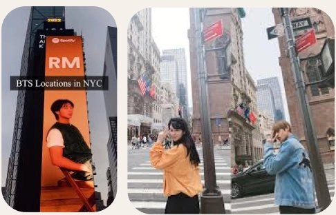
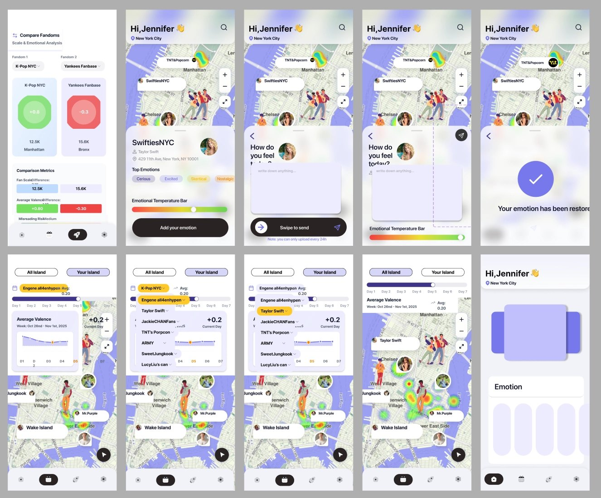
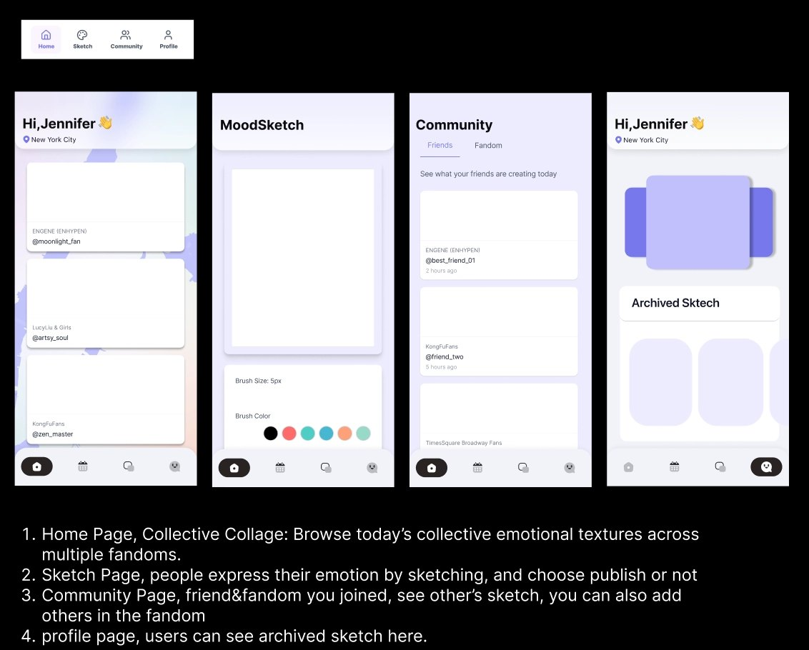
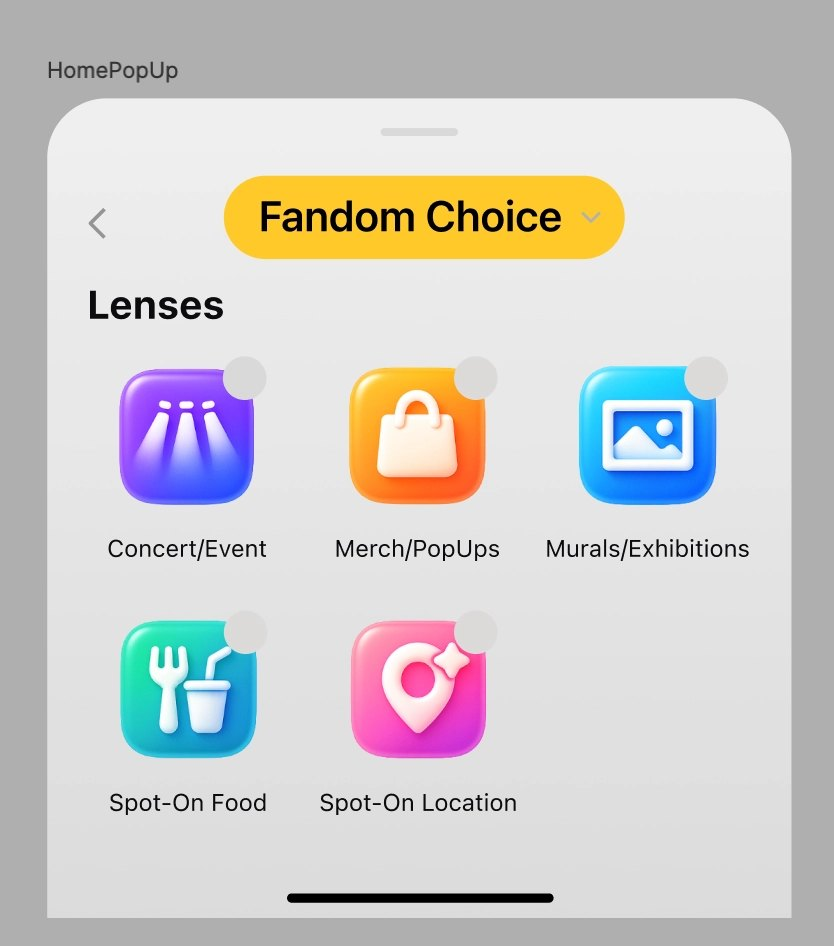
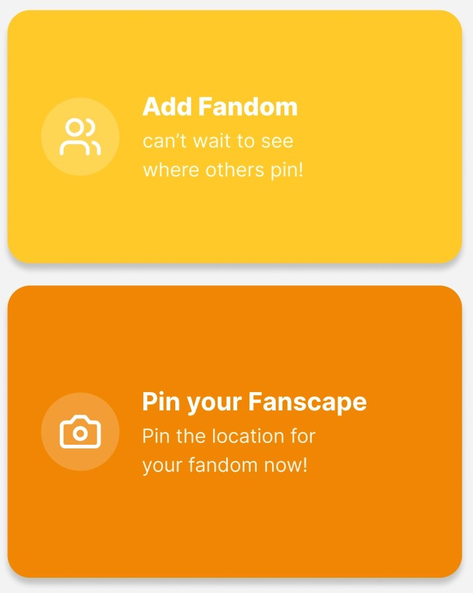
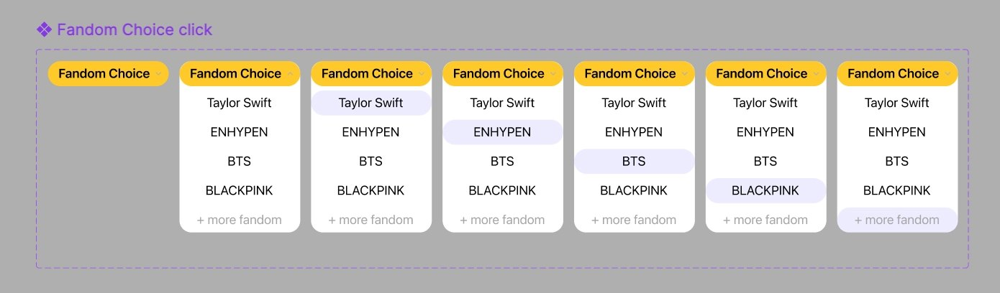
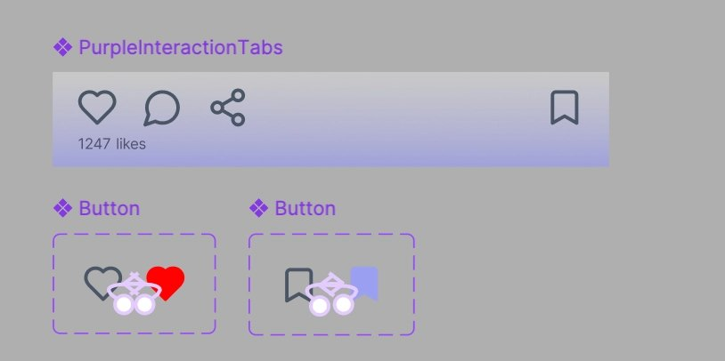
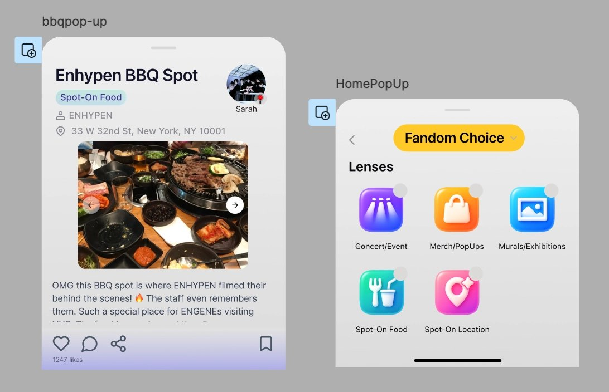
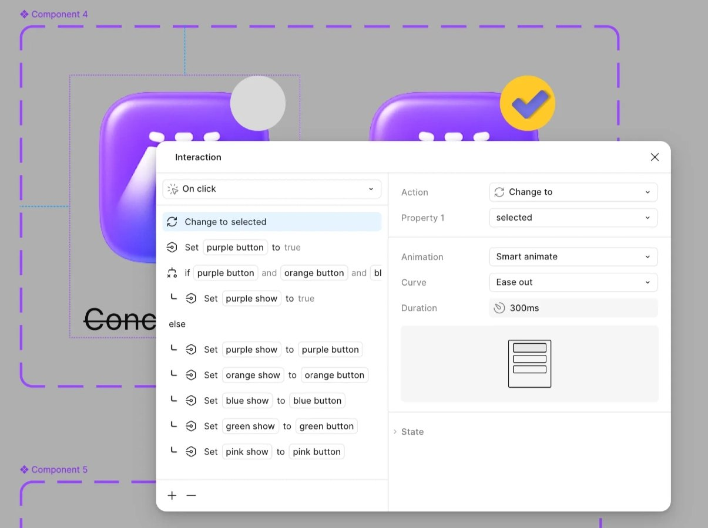

Overview
One map for every fandom place: concert sites, pop-ups, murals, idol cafés and photo spots.
Problem
Fandom places are scattered everywhere.
Fandom experiences are split across many platforms. Fans can't easily find real-world fandom places or see where their community has been.
"I know this place exists, but I can't find it." Locations are buried in TikTok, Instagram, Reddit and Google Maps, often inaccurate, and gone fast.
give fans a centralized, trustworthy, map-based platform to explore fandom places, verified by fans, filtered by lenses and connected to their community?
Design Goal
Pin meaningful places through lenses.
Build a map-based experience that helps fans pin meaningful fandom locations through lenses.
- Find a fandom spot fast, in any city
- Lenses filter location types clearly
- See friends' pins on map and profile
- Fan-made guidebooks
- Fans who want to remember places that matter to their fandom
- International fans traveling to a new city
- Fandom friend groups
- Locations rely on user content
- Pins must scale without clutter
- Privacy for friend visibility
- Mobile-first, cross-cultural (US, Korea, China, Japan, Europe)
Research
Competitive analysis + 9 interviews.
Competitive analysis
Weverse · Weibo · Xiaohongshu · TikTok fan guides
- Fandom communities are mostly virtual; no platform maps real-world fandom places
- Platforms amplify emotion but lose the link to real places


Semi-structured interviews
6 fans · K-pop, C-pop, Western fandoms
- Fandom journeys are spatial but poorly documented
- Fans only care about their own fandom
- Fans want to see where others pinned
→ Pins, "Select your fandom", Guidebooks

Follow-up interviews
3 fans · K-pop, Marvel, Broadway
- Fans need a reliable way to verify real spots
- Overloaded maps overwhelm; users need filtering
→ Five Lenses, Friends tab
Ideation
Three ideas I dropped, one I kept.
Unclear use; why care about other fandoms' emotions?
Too personal, weak link to place.
Duplicates existing platforms.
Filters, check-ins and guidebooks. The most direct fix for scattered location info.




Design Process
Double diamond.
Emotional mapping, too abstract
Early like/comment system
NYC-only → global app
Four core tabs
Visual system · friendly, clear, community-oriented



Final Design
Map as home, everything else as an overlay.

Choose a fandom → filter by lens → open a spot → pin your own

Guidebooks · Friends · My Fan Map
Testing
4 rounds with fans, classmates, ITP and Design Lab.
- Warm tone and mascot: "it's cute… the maps look really lovely"
- Map as home, features as overlays
- Lens filtering felt intuitive
- "Welcome!" and "Sent!" felt rewarding
- Why are other fandoms' pins showing?
- Friend page showed too much personal info
- Likes and sharing were unclear
- Full-page navigation lost context
Iterations
Hides irrelevant fandom pins.

Clearer icons, animated with variables.

Only pins, fandom badges and a signature.

Users stay anchored to the map.

Reflection
Fun and function, together.
Users want emotion and function at once; the interface has to feel fun while solving a real problem.
Clear map logic (fandom choice, lenses) is essential; users expect instant feedback.
Fans read UI symbolically: icon shape, color and microcopy shape trust.
Figma skills I built


Next